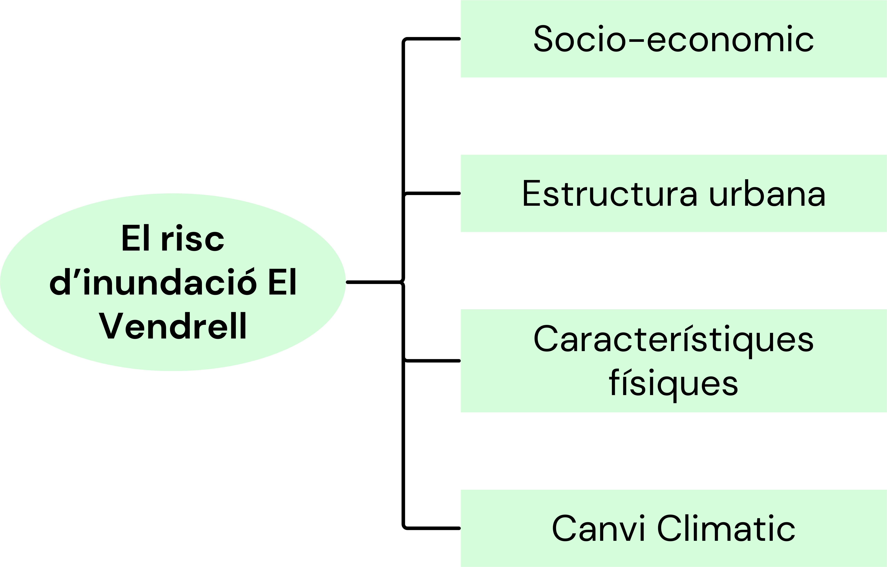
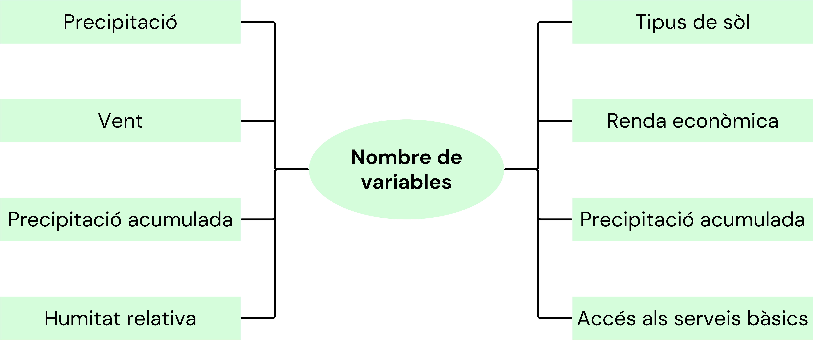

El primer pas consisteix en la recerca d'informació rellevant, utilitzant fonts rigoroses i científiques per analitzar les dades necessàries per al seu ús posterior. En aquest cas, s'han utilitzat fonts amb dades climàtiques, com ara l'E-OBS, el qual també s'aprofita d'altres fonts de dades com el Copernicus o el Climate Change Service.
Un cop establertes les fonts d'informació, el pas següent és el tractament de les dades que s'utilitzen per a l'estudi. Això inclou variables com la precipitació (RR), el vent (FG) i la humitat (HU).
El tercer pas consisteix en la transformació dels fitxers per extreure'n la informació rellevant. A cada variable se li han aplicat les següents clàusules:
S'ha extret la informació indicant les coordenades de la zona d'estudi, com es pot observar en les funcions següents, amb l'objectiu d'obtenir només les dades del Vendrell.
Les dades s'han limitat a un període específic per al seu anàlisi posterior. Això vol dir que s'ha especificat, a través d'un codi per a les tres variables, un període de temps i un nom per a guardar-les posteriorment com a fitxers en format de taules per a les tres variables climàtiques.
Un cop completat el procés descrit anteriorment, es va iniciar la creació dels Calendarplots. L'objectiu principal d'aquesta etapa és facilitar la visualització ràpida de les dades, que poden ser potencialment complexes, d'una manera familiar per a l'usuari interessat.
Aquesta representació gràfica permet mostrar de manera clara i concisa les variacions en les dades climàtiques al llarg del temps, proporcionant una comprensió immediata de les tendències i els patrons.
Factors davant el perill d'inundació al municipi del Vendrell.
Definició de variables, indicadors i valors.

El municipi del Vendrell presenta una variada distribució de nivells de risc d'inundació en tot el seu territori. Es destaca clarament que les zones externes del municipi mostren nivells de risc d'inundació mitjà, alt i predominantment molt alt, mentre que a les zones més cèntriques es troben nivells de risc molt baix i baix.
El risc d'inundació alt és el més predominant, amb un total de 1280 hectàrees, seguit del risc mitjà amb 798 hectàrees. Tot i que els nivells de risc baixos no són els més predominants, podem destacar positivament que el nivell de risc més perillós, el molt alt, és el que representa menys superfície, amb només 93,87 hectàrees.

S'han creat Calendarplots com a eines il·lustratives per visualitzar de manera més clara els resultats obtinguts de l'anàlisi de les dades. Com es pot veure a continuació, es mostren dos anys de tota la sèrie analitzada: el 2000 i el 2022.
La selecció d'aquests anys es basa en els esdeveniments que van tenir lloc el juny del 2000, un any en què es van produir inundacions significatives a la zona d'estudi. Durant aquest episodi, es van registrar més de 100 litres/m² en pocs minuts, entre els dies 9 i 10 del mes de juny.